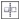

Быстрые ссылки на процедуры, описанные на этой странице:
• |
При отражении изменений в объектах кривых выполняется редактирование узлов, а затем те же изменения выполняются в обратном направлении в соответствующих узлах. Например, можно переместить узел вправо, а соответствующий ему узел переместится на то же расстояние влево.
Чтобы отразить изменения, необходимо выбрать два объекта кривых, один из которых создан путем отражения второго, или симметричный объект. Для получения сведений об отражении объектов см. раздел Поворот и зеркальное отражение объектов. Затем потребуется выбрать способ отражения изменений: по горизонтали (вдоль вертикальной линии симметрии) или по вертикали (вдоль горизонтальной линии симметрии). Наконец, потребуется выбрать правильные соответствующие узлы, чтобы изменения отражались в выбранных объектах.
Слева: два соответствующих узла выбраны на отраженных объектах кривых. Справа: при перемещении синих маркеров управления изменение отражается в соответствующих маркерах управления (красных).
| Отражение изменений в объектах кривых |
1. |
С помощью инструмента Указатель выберите отраженные объекты
кривых или симметричный объект кривой.
|
2. |
Выберите инструмент Фигура |
3. |
Выберите один из следующих параметров на панели свойств.
|
• |
Кнопка Отразить узлы по горизонтали  позволяет редактировать
соответствующие узлы, которые были отражены по горизонтали
|
• |
Кнопка Отразить узлы по вертикали позволяет редактировать
соответствующие узлы, которые были отражены по вертикали
|
4. |
Удерживая нажатой клавишу Shift, выберите соответствующие узлы
слева и справа или сверху и снизу.
|
5. |
Измените узлы на одной из сторон.
|
Изменения отразятся в обратном направлении на соответствующих узлах с другой стороны. |
Copyright 2012 Corel Corporation. Все права защищены.